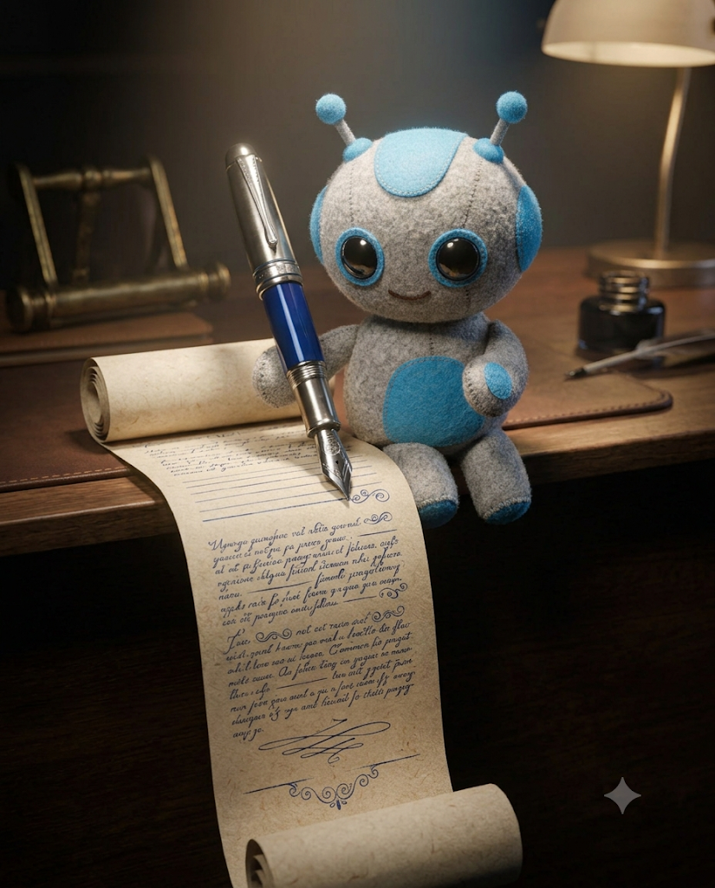

다듬을 초안을 붙여 넣고 시작하세요. 한 번에 한 문단씩 하면 더 정확합니다.
아래 초안의 각 문단에서 결론에 해당하는 문장을 찾아 문단 맨 앞으로 옮겨 줘. 내용은 바꾸지 말고 순서만. [초안 붙여넣기]
40자가 넘는 문장을 찾아 두 문장으로 나눠 줘. 뜻은 그대로.
'매우, 상당히, 적극적으로, 다양한, 효과적으로' 같은 꾸밈말을 모두 빼고 사실만 남겨 줘.
문장마다 핵심 숫자를 앞쪽으로 옮겨 다시 써 줘. 숫자가 없는 주장 문장은 따로 표시해 줘.
이 문단을 '~함', '~임'으로 끝나는 개조식 3줄로 바꿔 줘.
'검토 예정, 추진 중, 협의 필요' 같은 애매한 표현을 찾아 누가·언제·무엇을 하는지 구체적인 문장으로 바꿔 줘.
누가 하는지 빠진 문장을 찾아 주어를 넣어 줘. 모르면 [담당]으로 표시.
같은 뜻이 반복되는 문장을 찾아 하나로 합쳐 줘. 합친 곳을 표시해서.
같은 대화창에서 이어 보내세요. 보고 대상(팀장/임원/대표)을 알려 주면 더 잘 맞춥니다.
이 보고서를 [임원]이 30초 안에 읽을 3줄로 압축해 줘. 결론 · 핵심 숫자 · 필요한 결정.
실무에서만 쓰는 용어와 약어를 찾아 임원도 바로 아는 말로 바꿔 줘.
문제 상황을 숨기지 않으면서 대응을 함께 보여 주는 문장으로 바꿔 줘. 형식: 문제 → 영향 → 대응.
도움이나 승인을 요청하는 문장을 선택지 2개와 추천이 있는 문장으로 바꿔 줘.
변명이나 책임 회피처럼 들리는 문장을 찾아 사실 중심 문장으로 바꿔 줘.
결론이 보이는 보고서 제목을 3가지 제안해 줘. 25자 이내, 하나는 숫자 포함.
문장으로 늘어놓은 비교나 진행 상황을 찾아 표로 바꿔 줘.
같은 내용을 대표 보고용 한 문장으로 줄여 줘. 숫자 하나와 결정 하나만.
마지막 3분으로 빨간 펜을 줄입니다.
고치기 전 문장과 고친 문장을 표로 보여 줘. 왜 바꿨는지도 한 줄씩.
이 보고서를 읽은 임원이 물을 질문 3개와 한 문장 답을 준비해 줘.
보고서 숫자끼리 합계·비율·증감이 맞는지 확인하고 틀린 곳을 알려 줘.
맞춤법과 띄어쓰기만 고쳐 줘. 문장은 바꾸지 말고 고친 곳만 목록으로.
보고서 안에서 높임말과 문체가 섞인 곳을 찾아 하나로 통일해 줘.
이 보고서가 A4 1장을 넘으면 덜 중요한 문장부터 빼서 맞춰 줘.
이 보고서를 첨부해 보낼 메일 본문을 3줄로 써 줘. 마지막 줄은 결정 요청.
오늘 고친 문장들을 보고 내가 자주 하는 글쓰기 습관 3가지와 고치는 요령을 알려 줘.
왼쪽 표현이 보이면 오른쪽처럼 바꾸세요. 이 표를 붙이고 "이 기준으로 고쳐 줘"라고 해도 됩니다.
| 이렇게 쓰면 | 이렇게 바꾸기 |
|---|---|
| 검토할 예정입니다 | [담당]이 [날짜]까지 검토합니다 |
| 상당한 성과를 거두었습니다 | 목표 대비 112% 달성했습니다 |
| 다양한 방안을 모색 중입니다 | A안·B안 두 가지를 비교 중입니다 |
| 적극적으로 추진하겠습니다 | [날짜]까지 [결과물]을 완료합니다 |
| ~함에 따라 ~하였으며 | 두 문장으로 나누기 |
| 협의가 필요합니다 | [부서]와 [날짜]까지 [안건] 결정이 필요합니다 |
하나라도 걸리면 해당 프롬프트로 고치세요.
| 확인할 것 | 기준 | 고치는 프롬프트 |
|---|---|---|
| 문단 첫 문장이 결론인가 | 모든 문단 | 01 |
| 긴 문장이 없나 | 문장 40자 이내 | 02 |
| 숫자가 앞에 있나 | 핵심 문장마다 | 04 |
| 애매한 말이 없나 | 누가·언제·무엇 | 06 |
| 결정할 게 보이나 | 선택지와 추천 | 12 |
회사 양식을 먼저 붙이고 '이 양식에 맞춰'를 덧붙이세요. 문장 다듬기 원칙은 어느 양식에나 통합니다.
프롬프트 끝에 '내용과 숫자는 바꾸지 말고 문장만'을 붙이고, 17번 전후 비교표로 확인하세요.
회사 보안 규정을 먼저 확인하세요. 고객명이나 금액은 [고객A], [금액]으로 바꿔도 문장 다듬기는 똑같이 됩니다.
됩니다. 글만 다루는 프롬프트라 어디서나 비슷하게 동작합니다.
이메일만 남기면 바로 열려요. 다음 자료가 나오면 먼저 알려드릴게요.